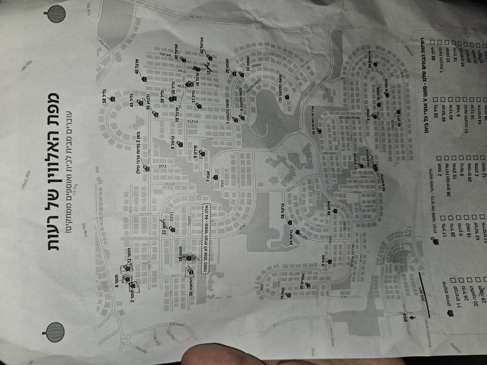

📄 המפה המקורית
✋ מצב תיקון מיקומים (גרירת בתים)
אם בית מופיע במקום לא נכון – הפעילו מצב תיקון וגררו אותו למקום הנכון. התיקון נשמר במכשיר.
📤 ייצוא מיקומים 📥 ייבוא
🔄 אתר מחדש את כל הבתים ↺ אפס סימוני ✓
סגור
